Valuing cash benefits¶
Some schemes will pay cash benefits on retirement or death in addition to pension benefits or by commuting pension for cash amounts. This note sets out how to value these benefits in SuperVal.
This article is based on version 9.25 of SuperVal.
Client Code
Users with Client Code 3 have more flexibility in valuing cash benefits than with Client Code 0.
Setups are considered for both client codes in this article.
This article does not include specific details of how to set up or value cash benefits for PPF runs and capped non-PPF runs.
PPF S179 (Levy) Valuations
Non-PPF Capped Runs
Overview¶
Actives¶
Post-Retirement cash benefits for active members can be made payable on the following events:
- Normal & Early Retirement
- Ill Health Retirement
- Deferred Normal Retirement
The cash benefit can be provided either on top of pension benefits or through commuting the pension.
Client Code 3 users
A combination of both cash on top and cash commuted can be specified if required.
There is flexibility available for specifying which pension is commuted for cash. Further commutation factors can be specified for each pension increase rate.
Pre-retirement cash benefits are also considered in this article.
Deferreds¶
Post-retirement cash benefits for Deferreds can be made payable on:
- Normal & Early Retirement
As with actives, the retirement cash can be payable either on top of pension benefits or provided through commuting the pension.
Client Code 3 users
A combination of both cash on top and cash commuted can be specified if required.
There is, however, no flexibility (as yet) in determining the pension that is commuted for cash and there is only one set of cash commutation factors (CCFs) that can be used.
Client Code 3 users
There is the option of commuting main or special pensions first or applying the pro-rata method, and also defining two sets of CCFs.
Pre-Retirement cash benefits are also considered in this article.
Actives¶
(Normal/Early/Deferred) Retirement Cash¶
The Retirement Cash parameters can be specified on the Ret Cash and Ret COT tabs:
Ret Cash:
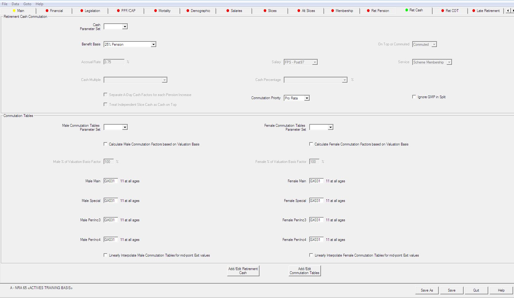
Ret COT:
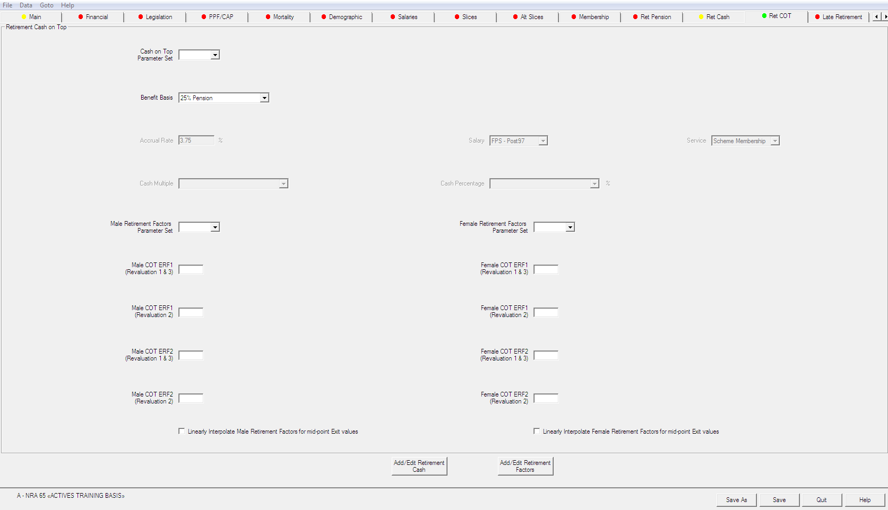
Ill-health retirement cash¶
These parameters are specified on the IH Cash tab. The IH Cash tab is very similar to the Ret Cash tab (the fields are the same except for the additional fields Include Prospective Service? and Male/Female Reduction Factors):
IH Cash:
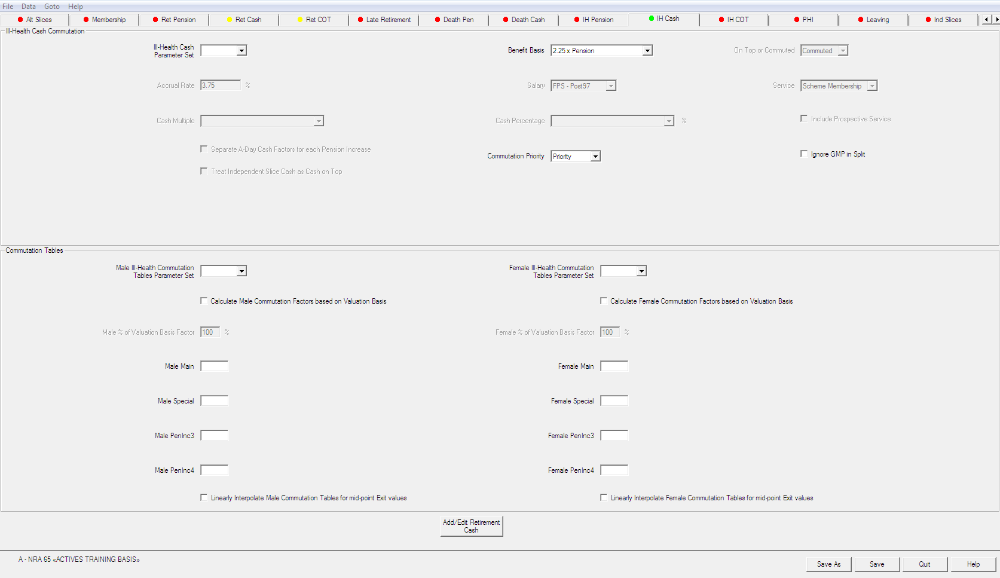
IH COT:
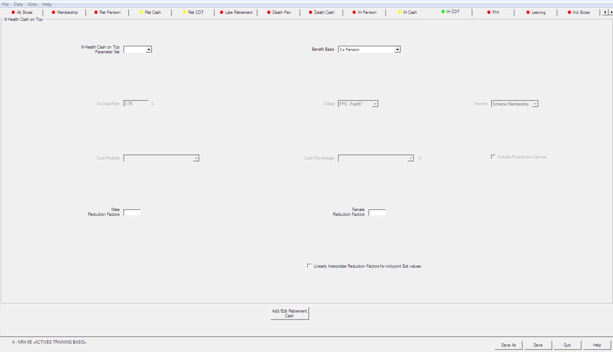
Parameters¶
Options¶
There are eight cash benefit ‘options’ or ‘types’ for active members:
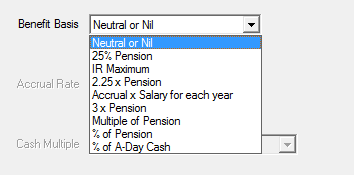
- Neutral or Nil
-
No retirement cash benefit will be valued.
- 25% Pension, 2.25 × Pension, and 3 × Pension
-
These can still be used, but have effectively been superseded by
Multiple of Pensionand% of Pension, which are more flexible. (See below.) - IR Maximum
-
can also still be selected, but is rarely chosen by SuperVal users.
- Accrual × Salary for each year
-
This option unlocks three fields:
- Accrual Rate
-
Type in the required accrual rate e.g. 3/80ths = 3.75%
- Salary
-
Select one of the salary projections (1 to 9) specified on the Salary tab to be used for retirement-cash calculation.
- Service
-
There are two options to choose from:
M – Scheme Membership S – Company ServiceWhere option
Mis selected SuperVal will calculate service using standard date data itemDJF – DoJ Scheme. So ensureDJFis specified in your data format and in your data for this option.Where option
Sis selected SuperVal will calculate service using standard data date itemDJS – DoJ Company. So ensureDJSis specified in your data format and in your data for this option.NB: If there is no Slice 1 then there will be no future-service cash calculated.
Maximum Service The setting for the service Maximum on the Retirement tab will apply to the Service calculation for the 3/80ths cash benefit.
Added Years will not be included in the service calculation for the
Accrual × Salary for each yearoption unless the data itemsDJForDJSare backdated as appropriate. - Multiple of Pension or % of Pension
-
Enter either the multiple or percentage that applies.
You can also specify member-specific multiples/percentages within the CSV file and select the relevant data item for the Cash Multiple or Cash Percentage field.
- % of A Day Cash
- Include Prospective Cash?
-
This field appears for Ill Health Retirement Cash benefits only.
By answering
Yesthe prospective (exit to NRD) service multiplied by the Future Service Fraction will be included in the cash calculation. - Reduction Factors (Male & Female)?
-
These fields appear for Ill Health Retirement Cash benefits only.
- On Top or Commuted?
-
Specify whether the cash benefit is
Cash On Toppayable on top of your pension benefits orCommutationpayable through commutation of the retirement pension.The commutation of the pension for the cash benefit is determined by the settings for the fields Priority and Commutation Tables.
A combination of both cash on top and cash commuted can be specified, so this field is not included in CC3.
Priority¶
This is used where the pension is commuted for cash. You can specify a priority order for commuting pension for cash.
The options are:
A – After Split
B – Before Split
N – No Priority
P – Pro Rata
The Split in options A and B refer to the Slice Not After Date for the Offset Slice No. specified on the Financial tab.
Typically an active member will have a service timeline as shown in the following diagram:
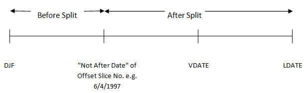
- After Split
-
In the above timeline priority option
A – After Splitwould mean that the pension accruing post 6/4/1997 will be commuted for cash first. - Before Split
-
In the above timeline priority option
B – Before Splitwould mean that the pension accruing pre 6/4/1997 will be commuted for cash first.
Note that for either of the time periods After Split or Before Split one or more of the pension-increase rates in payment Main, Special, PenInc3 or PenInc4 may apply. (The pension-increase rates Main, Special, PenInc3 and PenInc4 are indicated on the Slices.)
Within the After Split or Before Split time period the cash commutation order of the pension is:
Special
Main
PenInc3
PenInc4
- No Priority
-
The cash commutation order is simply by the pension-increase rate order, ignoring time period. In other words:
Special Main PenInc3 PenInc4This is regardless of when these pensions have accrued.
- Pro Rata
-
The pension will simply be commuted for cash in proportion, ignoring pension-increase rate and timing.
Note that SuperVal calculates the split between pension and cash by pro-rating the pension commuted.
See Appendix for a worked example.
Ignore GMP in Split?¶
This enables the split between Pre-97 and Post-97 benefit to be done in the correct proportions.
If Y-Yes is selected then SuperVal will not take off the GMP from
the Pre-97 benefit before calculating the proportions.
Please note if Y - Yes is chosen then GMP may be commuted depending
on the options chosen and the size of the GMP, but will still pay the
whole of the GMP at SPA. This may overstate the liability.
See Appendix for a worked example.
Commutation tables¶
Specify the table codes that contain the cash commutation factors for males and females. These are typically tables with three decimal places i.e. GX type rate tables. (Note that you should use mid-year values for ages below NRA – because SuperVal assumes mid-year exits, and does not interpolate).
The factors may vary by pension-increase rate. Therefore a different table can be specified for Main, Special, PenInc3 or PenInc4 pension-increase rates. If the Scheme only uses one set of cash commutation factors, specify this table for all 4 of the pension-increase rates.
Client Code 3 users
Cash benefits can also be defined in the Ind Slices tab within each slice for CC3 users.
By setting the start age and end age as the same (either by specifying the ages on the slice or using a member-specific data item), SuperVal will value the benefit as cash.
Allowing for Maximum Pension Commencement Lump Sum (PCLS)
SuperVal does not currently give users the option to use the maximum PCLS, and so it needs to be valued via the % of Pension option. In the majority of cases, the proportion will vary by member, and so you will need to calculate it outside of SuperVal and then use the cash multiple field to define it as a member-specific item.
VarPrint¶
The VarPrint shows in section 1400 the calculation of the Normal & Early Retirement Cash. Where the Retirement Pension is commuted for Cash, the post-commutation pension is shown in section 1600. For Leaving Service Cash, this is shown in section 2510.
Pre-retirement cash benefits¶
Cash benefits payable on the death of a member prior to retirement (either on death-in-service (DIS) or death-in-deferment (DID)) can be valued in SuperVal.
DID cash benefits¶
DID benefits can be set up on the Leaving Service tab:
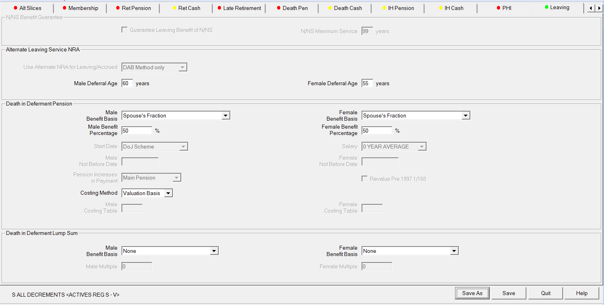
Benefit Basis (Males/Females)¶
There are four options:
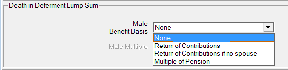
- None
-
Self-explanatory
- Return of Contributions
-
The benefit includes a return of past contributions, the value is in the
ACWstandard data item, and future contributions as specified in the Contributions tab. It is assumed ACW includes interest to the valuation date (if applicable).The Interest Rate on Service on the Contributions tab will apply to withdrawal. The Interest Rate in Deferment on the Contributions tab will apply from withdrawal to death in deferment.
- Return of Contributions if No Spouse
-
This is same as
Return of Contributionsexcept contributions are returned only if there is no spouse on death in deferment. The benefit value is the product of that option and Proportion Married. - Multiple of Pension
-
Use this option where a cash benefit is payable on DID which is a multiple of the Deferred Retirement Pension.
Deferreds¶
Ret Cash and Ret COT tabs¶
Ret Cash:
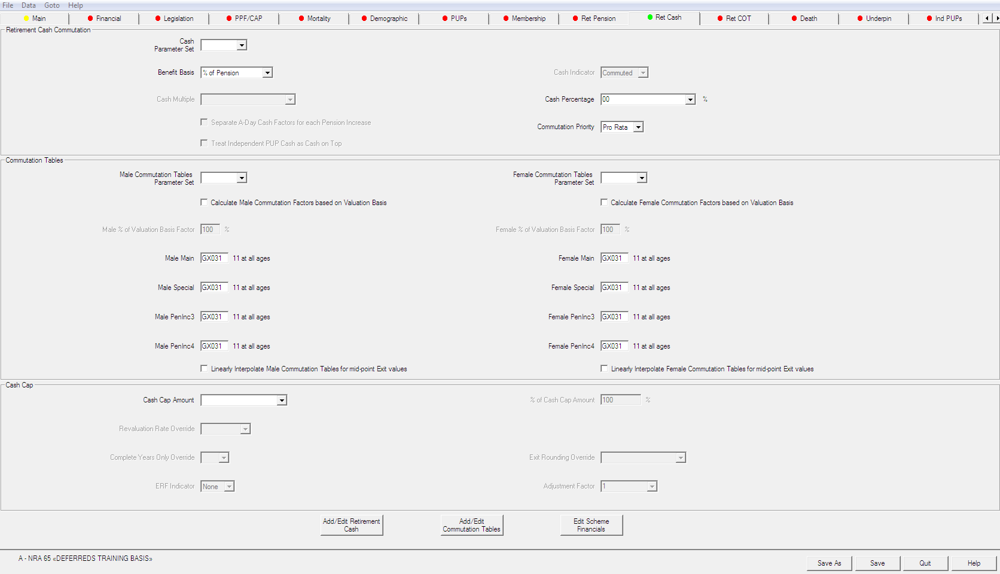
Ret COT:
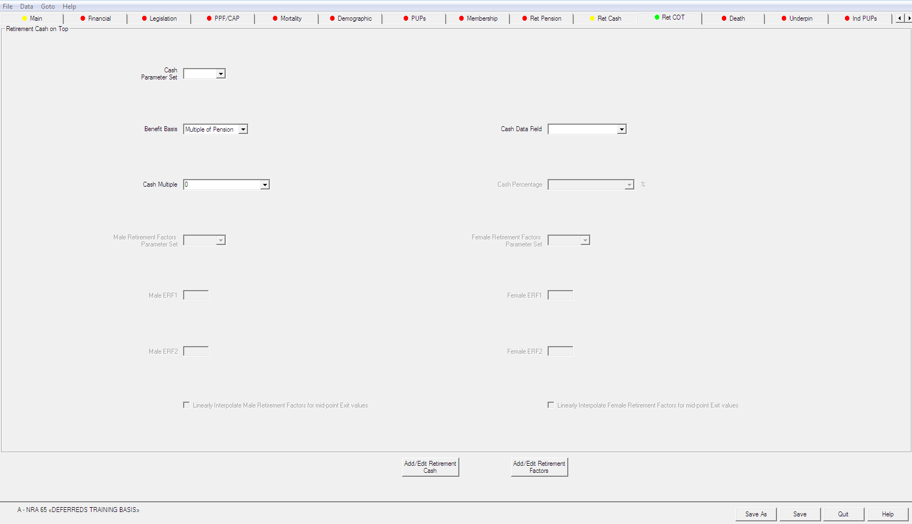
The options in the tabs are:
- Cash Indicator
-
Select whether the retirement cash benefit is payable
On Topof pension or provided throughCommutationof the pension.Client Code 3 users
A combination of both cash on top and cash commuted can be specified, so this field is not included in CC3.
- Multiple of Pension
-
The cash benefit can be a multiple of the retirement pension. Note that this means the cash amount will have been subject to the same deferred revaluation (excess and GMP) as the pension up to retirement age.
- Percentage of pension
-
Alternatively, the cash benefit can be a percentage of the retirement pension multiplied by the relevant commutation-table factor.
Again note that the cash will then be subject to the same deferred revaluation as the pension.
Client Code 3 users
The Cash Multiple or Percentage amount may be input as a member specific data item (within the CSV file) using the relevant FIELD input.
Commutation table (Males/Females)¶
Select the cash commutation factor tables applicable. These tables will be used if the cash is provided through commuting the pension or if using the Percentage of pension benefit option.
Note that only one set of cash factor tables can be specified.
Furthermore, no Priority setting can be specified for Deferreds.
Cash commutation for Deferreds will behave like the actives Priority setting No Priority (in other words, by pension-increase rate).
This order is:
Special increasing pension
Main increasing pension
Pen Inc 3
Pen Inc 4
It is therefore prudent with Deferreds, where more than one pension-increase rate is being used, to set the lowest pension-increase rate as Special. This is to ensure that the ‘cheaper’ pension is used up for commutation for cash first. See Appendix for a worked example.
Client Code 3 users
For CC3 users, four sets of CCFs can be defined (for Main, Special, Peninc3 & Peninc4 pensions), and Commutation Priority can also be specified.
PUPs¶
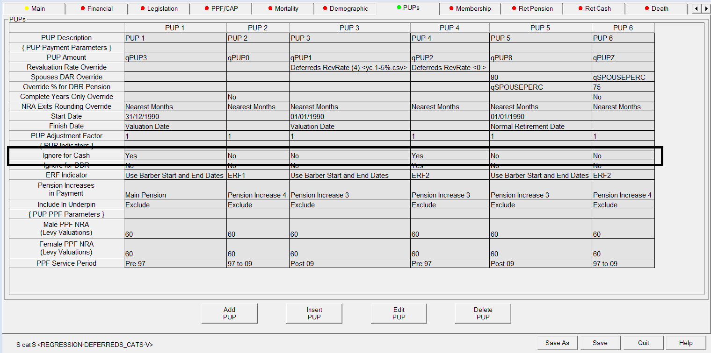
Ensure the Ignore for Cash options in the PUPs are set accordingly. These can be useful if any pensions are non-commutable, or if Cash on Top is only provided on certain pensions
Using Cash Cap¶
If the cash data item for each member is available you can use the Cash Cap region in the Retirement Cash tab to value the benefit:
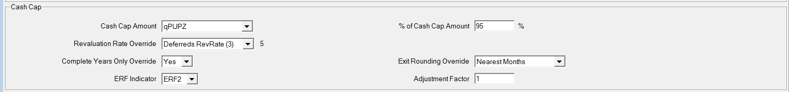
Using this section gives complete control over the amount of retirement cash. The following parameters that can be applied to the cash data item:
Revaluation Rate
Complete Years Only (early retirement exits)
(NRA) Exit Rounding
% Data Item
Early Retirement Reduction Factor Table (ERF1 or ERF2)
Adjustment Factor
Note, however, that this is a Cash Cap, i.e. the maximum amount each member can take.
So, to ensure that this data item is valued, the formula on the Benefits screen needs to be set to a rate that will exceed the cash benefit specified in this Cash Cap column for every member.
Client Code 3 users
Cash benefits can also be defined in the Ind PUPs Tab within each Ind PUP for CC3 users.
By setting the start age and end age as the same (either by specifying the ages on the PUP or using a member-specific data item), SuperVal will value the benefit as cash.
Pre-retirement cash benefits¶
Death-in-Deferment cash benefits can be specified on the Death tab:
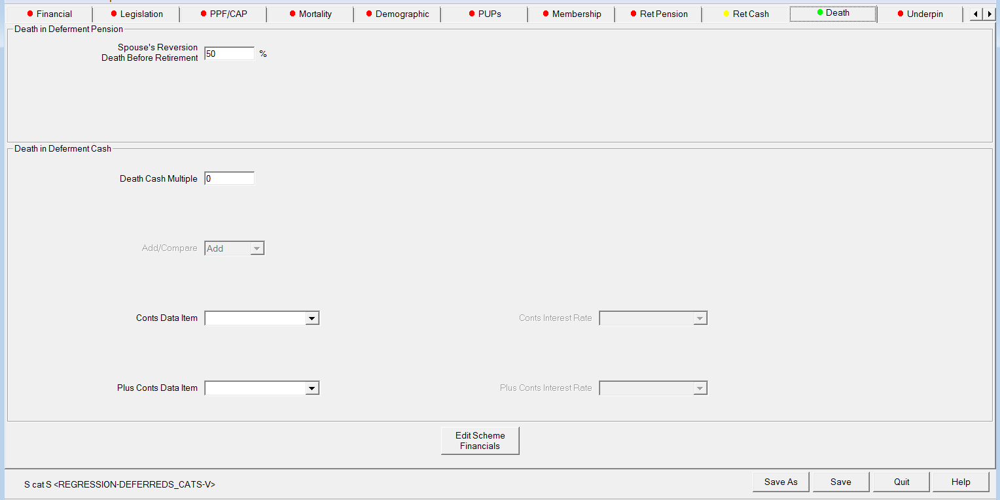
- Death Cash Multiple
-
If a lump sum multiple of Deferred Pension is payable on DID, enter the multiple applicable i.e. enter 5 for 5 × Pension.
- Conts Data Item (Plus Conts Data Item)
-
If a return of contributions is payable on DID, then choose the data item for this field from the data CSV file. Up to two different contribution amounts can be selected (two separate fields)
- Conts Interest Rate (Plus Conts Interest Rate)
-
If a return of contributions is payable on DID (specified in the previous field), input the interest rate to apply to the amount (from valuation date to decrement date). Since two separate contribution items can be specified, two separate interest rates can also be specified.
- Add/Compare
-
If both Death Cash Multiple and (one or more) Conts Data Item(s) are specified, SuperVal can either value all benefits (i.e. add them up) or take the greater of the Death Cash Multiple and the (sum of the) Conts Data Item(s) (i.e. compare them). Select the appropriate option.
Appendix¶
Actives – Pro-rata examples¶
Cash = 25% of pension – Cash Commutation on Retirement
- Member has 10 years’ Past Service (PS) and 10 years’ potential Future Service (FS) to assumed retirement age.
- Benefit is accrued uniformly over whole service period, but pension increases in respect of FS are higher than those in respect of PS.
- Cash Commutation Factor for PS= 10. Cash Commutation Factor for FS=15.
- Assume total projected pension benefit = £20,000.
- Assume 25% of pension is commuted.
SuperVal will commute pension as follows:
Total Pension commuted = 25% of £20,000 = £5,000
This is split in proportion to the pension, so 50% goes to PS and 50% to FS
PS: Pen comm = £2,500, Cash = £2,500 × 10 = £25,000
FS: Pen comm = £2,500, Cash = £2,500 × 15 = £37,500
Total cash = £62,500
Note 1: SuperVal includes any ERFs or LRFs when working out the proportion of pension commuted.
Note 2: The position is skewed if there is GMP, and Ignore GMP in
split? is set to No. The pension commuted is the same, but it’s
assumed only to be taken from excess over GMP pension.
For example, if GMP at retirement was £4,000 in the above example,
then total excess is £16,000 (£6,000 PS and £10,000 FS). So:
PS: Pen comm = £5,000 × 6/16 = £1,875, Cash = £1,875 × 10 = £18,750
FS: Pen comm = £5,000 × 10/16 = £3,125, Cash = £3,125 × 15 = £47,875
Total cash = £65,625
If NRA<SPA, Superval will also check that there is sufficient residual benefit at SPA to cover GMP – and limit the retirement cash if necessary.
Note 3: Only member’s pension will be commuted. The spouse’s DAR pension is valued based on the pre-commutation pension amounts.
Cash = 2.25 × Pension
- Member has 10 years’ Past Service (PS) and 10 years’ potential Future Service (FS) to assumed retirement age.
- Benefit is accrued uniformly over whole service period, but pension increases in respect of FS are higher than those in respect of PS.
- Cash Commutation Factor for PS = 10. Cash Commutation Factor for FS=15.
- Assume total projected pension benefit = £20,000.
- Assume 2.25 × pension is taken as cash.
SuperVal will commute pension as follows:
Total cash = 2.25 × 20,000 = £45,000.
As noted earlier, SuperVal calculates the split between pension and cash by pro-rating the pension commuted. Therefore we need to calculate the proportion (P) commuted which will lead to a lump sum of £45,000:
P × (10,000 × 10 + 10,000 × 15) = 45,000
Therefore P = 18%. So
PS pension = 0.82 × 10,000 = £8,200
PS cash = 0.18 × 10,000 x 10 = £18,000
and
FS pension = 0.82 × 10,000 = £8,200
FS cash = 0.18 × 10,000 x 15 = £27,000
Note 1: SuperVal includes any ERFs or LRFs when working out the proportion of pension commuted.
Note 2: The position is skewed if there is GMP, and Ignore GMP in
split? is set to No. The total cash is the same, but it’s assumed
only to be taken from excess over GMP pension. Therefore P will end up
higher. For example, if GMP at retirement was £4,000 in the above
example, then then total excess is £16,000 (£6,000 PS and £10,000
FS).
P × (6,000 × 10 + 10,000 × 15) = 45,000
and so P = 21.43%. So
PS pension = 0.7857 × 6,000 + 4,000 = £8,712
PS cash = 0.2143 × 6,000 × 10 = £12,858
And
FS pension = £7,857
FS cash = 0.2143 × 10,000 × 15 = £32,145
If NRA<SPA, SuperVal will also check that there is sufficient residual benefit at SPA to cover GMP - and limit the retirement cash if necessary.)
Note 3: Only member’s pension will be commuted. The spouse’s DAR pension is valued based on the pre-commutation pension amounts.
Cash = 25% showing effect of Ignore Split
The tables below illustrate the resulting cash if other options are chosen for spreading the cash.
In the examples below, the split date is set as VDATE.
-
Before SplitandNo Priority(GMP = £6,000)Pension increases Pre-commtn pension Pension commuted Commtn factor Cash Post-commtn pension GMP 4,000 4,000 PS
(Excess)Special 6,000 5,000 10 50,000 1,000 FS Main 10,000 15 0 10,000 Total 20,000 5,000 50,000 15,000 Because PS has Special increases, it is commuted first if there is
No Priority. -
Before SplitandNo Priority(GMP = £6,000)Pension increases Pre-commtn pension Pension commuted Commtn factor Cash Post-commtn pension GMP 6,000 6,000 PS (Excess) Special 4,000 4,000 10 40,000 0 FS Main 10,000 1,000 15 15,000 9,000 Total 20,000 5,000 55,000 15,000 There is not enough PS excess pension to cover all the pension commuted, so some FS pension is commuted as well.
-
After split
Pension increases Pre-commtn pension Pension commuted Commtn factor Cash Post-commtn pension GMP 4,000 4,000 PS (Excess) Special 6,000 0 10 0 6,000 FS Main 10,000 5,000 15 75,000 5,000 Total 20,000 5,000 75,000 15,000
Deferreds¶
Cash commutation of 25% at retirement
- Male Member has Total Projected Deferred Pension of £1,000 p.a. at 65
- Benefit is split: £600 GMP, £200 Pre-97 XS, £200 Post-97 Pension
- Cash Commutation assumption: 25% of Pension at 65 commuted for cash
- CCF to apply at 65 = 16
Questions: Calculate the cash amount and split of post-commutation pension at 65 if:
- Pre-97 XS and Post-97 Pension are both valued with
Specialincreases. - Pre-97 XS valued with
Specialincreases, Post-97 Pension valued withMainincreases.
Solution:
This solution relates to Client Code 0 users only.
There is more flexibility in the set-up for Client Code 3 users.
Question 1: SuperVal commutes pension as follows:
Total Cash = 25% × 1,000 × 16 = £4,000
Total Pension Commuted = 25% × 1000 = £250
Total Post-Commutation Pension = £750
GMP will not be commuted, and since both pre-97 XS and post-97 pensions have been set up with the same increases, they will be reduced proportionally by the same amount.
Hence, split of Post-Commutation Pension is as follows:
GMP = £600
Pre-97 XS = £75
Post-97 Pension = £75
Question 2: SuperVal commutes pension as follows:
Total Cash = £4,000
Total Pension Commuted = £250
Total Post-Comm Pension = £750
GMP not commuted. Since pre-97 XS has been set-up with Special increases
and post-97 Pension set up with Main increases, it will commute the Special pension first.
Hence, split of Post-Commutation Pension is as follows:
GMP = £600
Pre-97 XS = £0
Post-97 Pension = £150